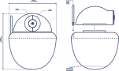

Formation NodeJS
Xavier Van de Woestyne - Novembre 2016Bonjour !
- Développeur à Dernier Cri
- Programmation depuis 1999
- Travail de recherche (un peu particulier)
- @xvw sur Github et Medium, @vdwxv sur Twitter
- Outils principaux: OCaml, Erlang, Elixir, F#, Ruby, JavaScript, Haskell.
Dernier Cri
Une agence d'innovation numérique
- Web (développement/UI/UX)
- Conception de produits et logiciels
- Analyse et Machine-Learning
- Consultance
- Open-Source
- Formations
- Ouvert à la communauté
Rapide tour de présentation
- Prénom et Nom
- Eventuellement âge, hobbies
- Expérience en développement
Je peux tutoyer ou vouvoyer à la convenance !
Objectifs de la formation
Programme
Introduction à JavaScript
- Présentation et historique
- Eléments de syntaxe
- Programmation fonctionnelle
- Programmation orientée objets
- Gestion des erreurs
- Présentation
- Prise en main
- Un premier programme
- Eco-système (NPM, modules)
- Packager une application
- Outils de déboguage
Fonctionnement d'un serveur web
- Principe général
- Serveurs génériques
- Application exposant un serveur
- Un premier serveur simple
- Programmation événementielle
- Les Promesses
- Les flots de données
- Routage
- Descripteur de fichiers : lecture / écriture
- Exercice : Un serveur de fichiers statiques
Implémentations concrètes
- Requêtes distantes (+Json)
- Persistance de données
- Express : simplification des routes
- Exercice : une todo-liste
- WebSockets via SocketIO
- Exercice : Twilio en temps réel
- Notion de processus
- Clusters et workers
- Stratégies d'ordonnancement
- Programmation concurrente et acteurs
g
h